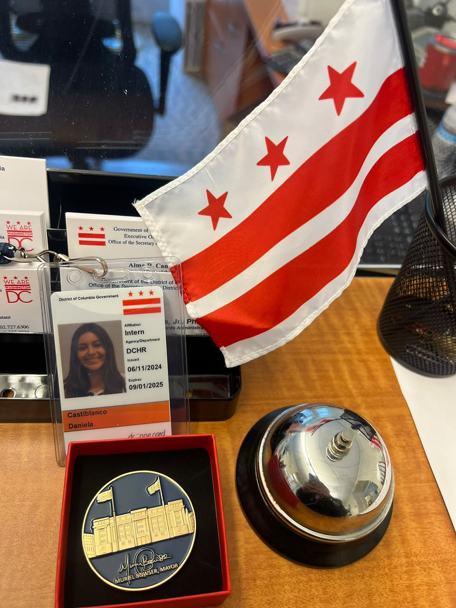
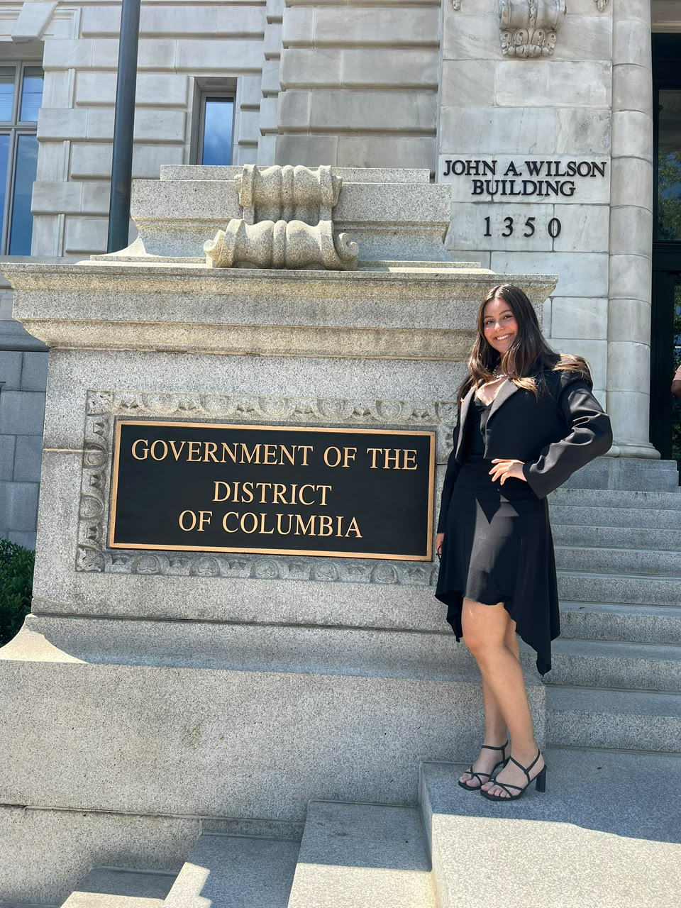
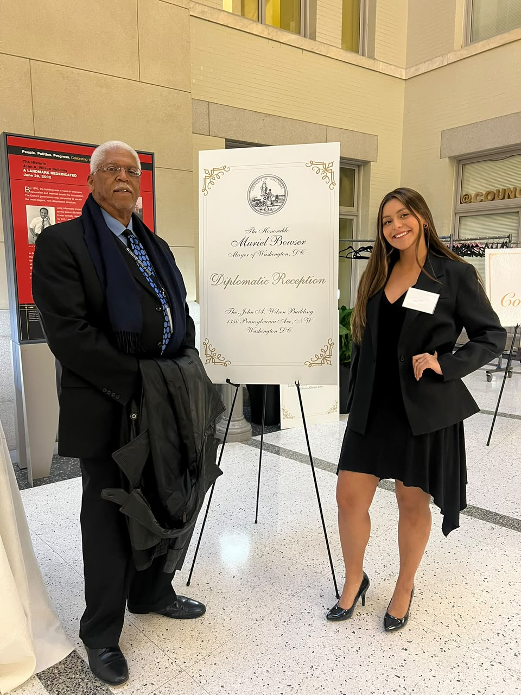

About Me

Daniela is a Master of Arts in International Relations (MAIR) candidate at Johns Hopkins SAIS specializing in public diplomacy and security in Latin America. She holds two B.A. degrees in English Literature and Public Leadership from the University of Wisconsin-Superior, where she served as Student Government President and led multiple student advocacy organizations. Before attending SAIS, her most recent work experience included interning at the Executive Office of the Mayor of Washington, D.C., Muriel Bowser, a one-year experience that deepened her commitment to public service. This Summer, Daniela is interning at the Organization of American States (OAS), at the Inter-American Drug Abuse Control Commission (CICAD, by its Spanish language acronym), contributing to regional policy analysis, bilingual editing, and multimedia production—including co-producing video initiatives for the OAS Secretary General and youth leadership networks. A proven digital communicator with over 3M+ views and 26,000 followers across self-managed channels, she brings extensive experience in multimedia editing, bilingual storytelling, and audience metrics, ranging from producing official video features for the OAS Secretary General to directing digital campaigns for international student outreach and Colombian travel media.
Education
Leadership Positions
Work Experience on campus
Professional Skills
Accomplishments/Awards
- Focus on Security in Latin America
- Minor in Political Science
- Minor in Philosophy
- GPA: 3.97 / 4.0
Johns Hopkins University – School of Advanced International Studies (SAIS)
Washington, DC
Master of Arts in International Relations — May 2027
University of Wisconsin–Superior
Superior, Wisconsin
Bachelor of Arts in Public Leadership and Changemaking — May 2025
Bachelor of Arts in English/Literature — May 2025
- President of the Student Government Association: 2023-2024
- President of the International Peace Studies Association: 2023-2024
- President of the English Club 2022-2023, 2021-2022
- President of the Amnesty International 2022-2023
- Member of the Commencement Speaker Committee: 2023,2024
- Member of Sigma Tau Delta 2024, 2023
- Member of the Non-Academic Misconduct Committee: 2023-2024
- Vice-President of the Phi Sigma Pi 2022
- Senator of Communication, Literature, and Arts 2022-2023
- Member of the Sustainability Club 2022-2023, 2021-2022
-
Intern – Organization of American States (OAS) Headquarters
Washington, D.C. | Summer 2026
-
Teacher Assistant (TA) – Colombia Capstone
Johns Hopkins University School of Advanced International Studies (SAIS), Washington, D.C. | January–May 2026
-
Intern – Executive Office of the Mayor of Washington, D.C.
Washington, D.C. | 2024–2025
-
Content Creator – Office of Intercultural Student Success & Gender Equity Resource Center
Superior, Wisconsin | 2023–2024
-
Content Creator – Viajesde15.com, Travel Agency
Bogotá, Colombia | 2021–2025
Technical & Digital Media
- Video Production & Editing: Adobe Premiere Pro, digital storytelling, multimedia content creation
- Design & Publishing: Adobe Acrobat Pro DC, document layout, visual deliverables
- Productivity Suites: Microsoft Office (Word, PowerPoint, Excel)
Communication & Writing
- Written Deliverables: Executive bios, internal communications, briefing materials, public information copy
- Public Speaking & Presentation: Verbal briefings, stakeholder presentations, event hosting
Languages
- Spanish: Native speaker
- English: Native speaker / Full professional proficiency
- Korean: Elementary / Basic proficiency
- Italian: Elementary / Basic proficiency
- Ranked 4th nationally among master's applicants in International Relations.
- Selected among the top 30% of applicants across all fields; one of 5% of Colombian students awarded a scholarship for an IR master's in the U.S.
- Awarded for academic excellence to students maintaining a 3.5+ GPA.
- Delegate at Harvard National Model United Nations, Boston, Massachusetts, 2025.
- Delegate at the National Model United Nations, Washington, D.C., 2023.
- Secretary-General, Model United Nations, Eucharistic School, Bogotá, Colombia, 2019.
University of Wisconsin-Superior, 2024


Social Media
As a content creator with over 1 million views and 26,000 followers gained, I bring direct experience in social media design, content strategy, and metrics analysis.
Featured Videos
Featured Videos
Diplomatic Reception
Reception for the Mayor of Washington, D.C., Muriel Bowser
As a Diplomatic Reception Organizer for Mayor Muriel Bowser's Executive Secretariat, I coordinated high-level events welcoming over 100 world ambassadors, which required me to manage protocol, communicate sensitive diplomatic information clearly, and facilitate dialogue among a politically diverse audience, skills essential to DGC work.


